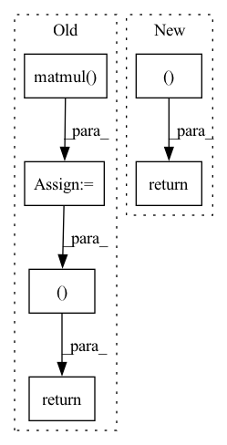

Pattern ID :17362

Before Change
a, b = ctx.saved_tensors
grad_a = np.matmul(grad_output.data, np.transpose(b.data))
grad_b = np.matmul(np.transpose(a.data), grad_output.data)
grad_a = tensor.Tensor(grad_a)
grad_b = tensor.Tensor(grad_b)
return grad_a, grad_b
class Pow(Function):
@staticmethod
After Change
grad_a, grad_b = ops_gpu.matmul_backward(ctx.cl_ctx, ctx.cl_queue,
grad_output.data, a.data, b.data)
return tensor.Tensor(grad_a, device=a.device), tensor.Tensor(grad_b, device=b.device)
class Pow(Function):
@staticmethod
In pattern: SUPERPATTERN
Frequency: 4
Non-data size: 6
Instances
Fragment ID: 57627471
Project Name: pabannier/nanograd
Commit Name: fc034567efdcbc5d490ae74f3f3876df2afb679a
Time: 2021-01-17
Author: pierreantoine.bannier@gmail.com
File Name: nanograd/nn/functional.py
M Class Name: MatMul
N Class Name: MatMul
M Method Name: backward(2)
N Method Name: backward(2)
M Parent Class: Function
N Parent Class: Function
M File Name: nanograd/nn/functional.py
N File Name: nanograd/nn/functional.py
M Start Line: 422
M End Line: 428
N Start Line: 434
N End Line: 440
'>
Before Change
if head_mask is not None:
attention_weights = attention_weights * head_mask
output = torch.matmul(attention_weights, v)
return output, attention_weights
class MultiHeadAttention(torch.nn.Module):
def __init__(self, d_model_size, num_heads, output_attentions=False):
After Change
// output = torch.matmul(attention_weights, v)
// return output, attention_weights
return v, attention_weights
class MultiHeadAttention(torch.nn.Module):
def __init__(self, d_model_size, num_heads, output_attentions=False):
'>
Fragment ID: 57627470
Project Name: saareliad/ftpipe
Commit Name: 1431f7022f524ee9cdaeb6f641ebcb35fe311fc7
Time: 2020-04-10
Author: alondej@gmail.com
File Name: models/normal/NLP_models/modeling_ctrl.py
M Class Name: ScaledDotProductAttention
N Class Name: ScaledDotProductAttention
M Method Name: forward(7)
N Method Name: forward(7)
M Parent Class: nn.Module
N Parent Class: nn.Module
M File Name: models/normal/NLP_models/modeling_ctrl.py
N File Name: models/normal/NLP_models/modeling_ctrl.py
M Start Line: 87
M End Line: 95
N Start Line: 87
N End Line: 95
'>
Before Change
query = torch.matmul(h_t, self.memory["Wq"]) // (B, N, d)
att_score = torch.softmax(torch.matmul(query, self.memory["Memory"].t()), dim=-1) // alpha: (B, N, M)
proto_t = torch.matmul(att_score, self.memory["Memory"]) // (B, N, d)
W_E = torch.matmul(proto_t, self.memory["FC_E"]) // (B, N, e)
_, ind = torch.topk(att_score, k=2, dim=-1)
pos = self.memory["Memory"][ind[:, :, 0]] // B, N, d
neg = self.memory["Memory"][ind[:, :, 1]] // B, N, d
return W_E, proto_t, query, pos, neg
def forward(self, history_data, future_data=None, batch_seen=None, epoch=None, **kwargs):
y_cov = history_data[..., [1]]
x = history_data[..., [0]]
After Change
_, ind = torch.topk(att_score, k=2, dim=-1)
pos = self.memory["Memory"][ind[:, :, 0]] // B, N, d
neg = self.memory["Memory"][ind[:, :, 1]] // B, N, d
return value, query, pos, neg
def forward(self, history_data, future_data, batch_seen=None, epoch=None, **kwargs):
// def forward(self, x, y_cov, labels=None, batches_seen=None):
x = history_data[..., [0]]
'>
Fragment ID: 57627473
Project Name: zezhishao/basicts
Commit Name: 4adec9a0403655584de5a4e97e41611c179b0f1e
Time: 2023-02-26
Author: 864453277@qq.com
File Name: basicts/archs/arch_zoo/megacrn/megacrn_arch.py
M Class Name: MegaCRN
N Class Name: MegaCRN
M Method Name: query_memory(2)
N Method Name: query_memory(3)
M Parent Class: nn.Module
N Parent Class: nn.Module
M File Name: basicts/archs/arch_zoo/megacrn/megacrn_arch.py
N File Name: basicts/archs/arch_zoo/megacrn/megacrn_arch.py
M Start Line: 169
M End Line: 178
N Start Line: 180
N End Line: 186
'>
Before Change
w = w_1 / w_2
out = torch.matmul(w.transpose(1, 2), encoder_outputs)
return out, w
class DurationPredictor(nn.Module):
Duration Parameter Predictor
After Change
attn = w / (torch.sum(w, dim=1).unsqueeze(1) + 1e-8) // [B, L, T]
out = torch.bmm(attn.transpose(1, 2), encoder_outputs)
return out, attn
class DurationPredictor(nn.Module):
Duration Parameter Predictor
'>
Fragment ID: 57627472
Project Name: keonlee9420/wavegrad2
Commit Name: 523ec241c64ab635218f32d071fd85fbc469e178
Time: 2021-07-13
Author: keonlee9420@gmail.com
File Name: model/modules.py
M Class Name: GaussianUpsampling
N Class Name: GaussianUpsampling
M Method Name: forward(4)
N Method Name: forward(4)
M Parent Class: nn.Module
N Parent Class: nn.Module
M File Name: model/modules.py
N File Name: model/modules.py
M Start Line: 115
M End Line: 135
N Start Line: 120
N End Line: 134